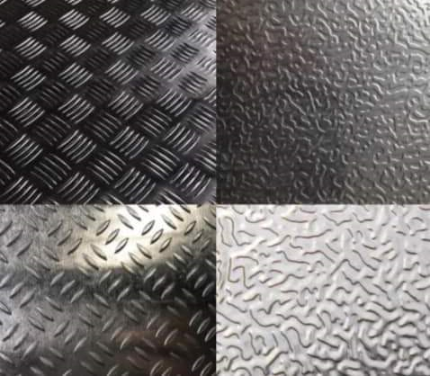
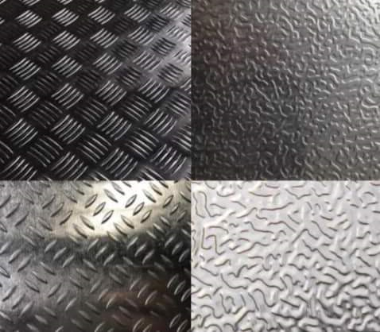

Checkerd Plate
Checkerd plate for industrial use.
Material: Checkered plates can be made from stainless steel, carbon steel, or mild steel.
Thickness: Checkered plates can be 2–12.5 mm thick.
Width: Checkered plates can be 1000–2000 mm wide.
Length: Checkered plates can be 1000–12000 mm long.
Finish: Checkered plates can be hot rolled, cold rolled, 2B, 2D, BA NO(8), or satin.
Standard: Checkered plates can follow standards such as ASTM, AISI, GB, JIS, SUS, EN, and DIN. Surface: Checkered plates can be ash black, painted, or galvanized